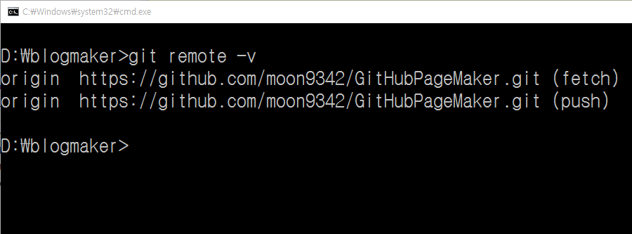
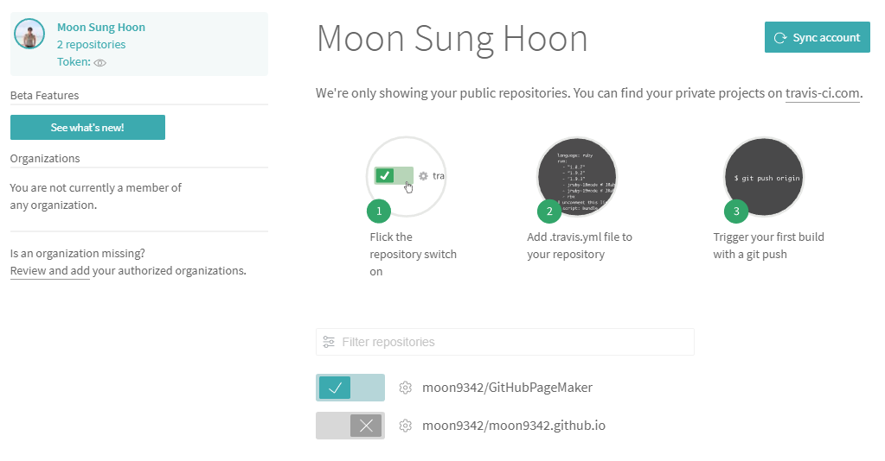
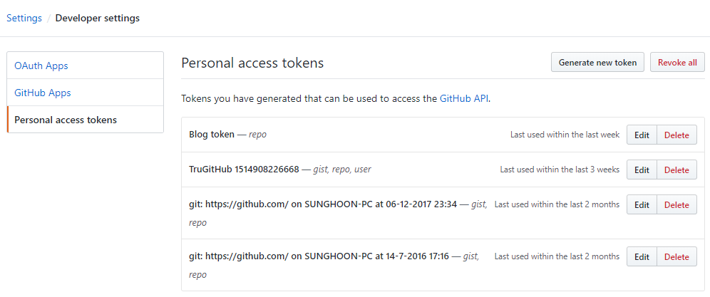
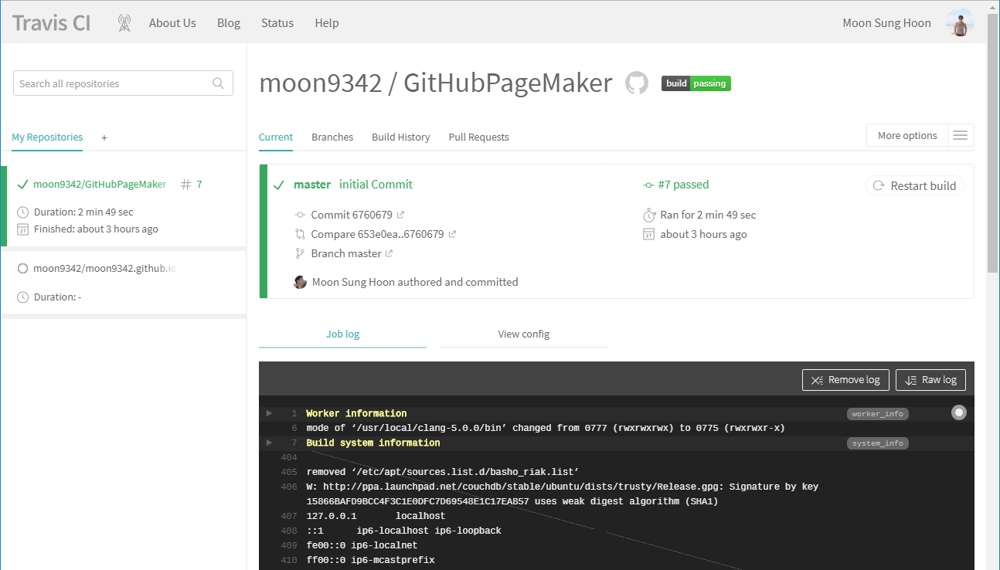

Jekyll 기반의 GitHub Page 생성(8) - Travis CI 활용(public Repository)
Jekyll 기반의 GitHub Page 생성은 여러 절로 구성되어 있습니다.
- Jekyll 기반의 GitHub Page 생성(1) - 환경설정
- Jekyll 기반의 GitHub Page 생성(2) - 블로그 수정 & Publishing
- Jekyll 기반의 GitHub Page 생성(3) - 웹 폰트 설정
- Jekyll 기반의 GitHub Page 생성(4) - rouge를 이용한 syntax highlighting
- Jekyll 기반의 GitHub Page 생성(5) - lunr.js를 이용한 Search 기능 추가
- Jekyll 기반의 GitHub Page 생성(6) - Google Search Console 활용
- Jekyll 기반의 GitHub Page 생성(7) - GitHub Gist 활용
- Jekyll 기반의 GitHub Page 생성(8) - Travis CI 활용(public Repository)
- Jekyll 기반의 GitHub Page 생성(9) - Jekyll site regeneration 속도 향상시키기
영상설명
이번 영상은 Travis CI를 이용하여 우리블로그의 build와 배포를 자동화하는 방법에 대한 내용입니다.
Jekyll 기반의 GitHub Page 생성(8) - Travis CI 활용 영상
Travis CI 활용(public Repository)
CI ( Continuous Integration )의 개념에 대해서 잘 알지 못하시는 분은 여기를 클릭하셔서
간단하게 이해를 하고 오시면 됩니다.
이 포스트에서는 Travis CI를 이용하여 Jekyll Source Folder안의 내용을 GitHub Repository에 commit했을 때 자동으로 GitHub Page에
블로그가 deploy되도록 하는 방법에 대해서 알아보겠습니다.
일단은 사용하는 GitHub Repository는 모두 Public으로 되어 있다고 가정하고 진행합니다.
만약 Private Repository를 이용하실려면 좀 더 복잡한 처리와 돈이 들어갑니다.
(Travis CI는 GitHub Public Repository에 대해서는 무료이지만 Private Repository에 대해서는 일정량의 금액을 지불해야 합니다.)
그럼 천천히 한번 진행해 보도록 하죠
GitHub에 2개의 Repository 준비
먼저 Jekyll Source Folder ( C:/blogmaker )에 대한 GitHub Repository를 준비합니다.
Public으로 생성하셔야 합니다.
저는 GitHubPageMaker라는 이름으로 Repository를 생성했습니다.
생성할 때 README.md 파일을 추가해서 생성하지 않습니다.
https://github.com/moon9342/GitHubPageMaker형태로 생성되겠군요.
그 다음은 GitHub Page에서 운영할 블로그에 대한 GitHub Repository를 준비합니다.
역시 마찬가지로 Public으로 생성하셔야 합니다.
Repository의 이름은 형식이 정해져 있습니다. {GitHub ID}.github.io 로 Repository를 생성하셔야 합니다.
생성할 때 README.md 파일 하나 추가해서 생성합니다.
https://github.com/moon9342/moon9342.github.io형태로 생성되겠네요.
Local Git Repository 생성 및 Remote 연결
GitHub에 원격 Repository가 생성되었으니 이번에는 로컬에 Repository를 생성합니다. C:/blogmaker 폴더에서 command 창을 열고
다음을 입력합니다.
git init
C:/blogmaker에 git Repository를 생성합니다. 이제 다음의 명령어를 이용해서 로컬 Repository에 파일을 추가하고 commit까지 진행
합니다.
git add *
git commit -m “initial commit”
자 이제 원격 Repository와 연결하는 작업을 수행합니다. 다음의 명령을 이용합니다.
git remote add origin https://github.com/moon9342/GitHubPageMaker.git
현재의 로컬 Repository가 원격 Repository와 연결되었습니다. 연결상태를 확인하려면 다음과 같이 입력하면 됩니다.
git remote -v

Git Submodule 생성
Jekyll Source Folder( C:/blogmaker )에 대한 Repository와 실제 블로그를 운영할 Repository를
git submodule로 묶습니다. Submodule의 개념은 여기
나 혹은 다른 블로그를 참조하세요.
command 창에서 다음과 같이 입력합니다. ( command 창의 현재 경로는 C:/blogmaker 입니다.)
git submodule add https://github.com/moon9342/moon9342.github.io.git output
현재 Repository의 하위에 output이라는 이름의 폴더가 만들어지고 해당 폴더는 moon9342.github.io Repository에
대한 로컬 git Repository가 됩니다. ( 내부적으로 git clone이 실행됩니다. )
output이라는 이름은 다른 이름으로 변경하셔도 됩니다.
단 _config.yml에 있는 destination 속성의 값과 이 이름이 같아야 합니다.
정상적으로 clone이 진행되어서 submodule이 생성되면 다음과 같이 입력합니다.
git submodule update
git은 submodule에 대한 삭제명령을 제공하지 않기 때문에 만약 기존의 submodule을 삭제하려면 다음과 같이 해야 합니다.
- Repository 루트에 있는
.gitmodules파일 수정 - Repository 루트의
.git폴더안의config파일 수정 ( [submodule “xxx”] 부분 수정) - git의 cache에서 submodule 삭제 (
git rm --cached module_path)
_config.yml 1차 수정
Jekyll Source Folder( C:/blogmaker )에 있는 내용을 컴파일 하면 그 결과가 output 폴더에 들어가도록
_config.yml을 수정합니다.
_config.yml의 destination 부분을 찾아 ./output/으로 수정합니다.
Travis 사이트에 접속
Travis 사이트에 접속해서 GitHub Repository에 대한 연결을 활성화 시킵니다.
기본적으로 Public Repository만 사용할 수 있습니다. 만약 Private Repository를 사용하고 싶으면 별도의 비용을 지불해야 합니다. ( 비용이 좀 비싼편입니다. )
https://travis-ci.org=> Public Repository를 위한 site입니다. GitHub 계정으로 로그인 합니다.https://travis-ci.com=> Private Repository를 위한 site입니다. GitHub 계정으로 로그인 합니다.

그림에서와 같이 연동할 GitHub Repository를 선택해서 Enabled 시켜줍니다.
잠깐 정리하자면, 연동된 GitHub Repository인 GitHubPageMaker에 push가 이루어지면 Travis CI가
.travis.yml 설정파일을
찾아서 이를 이용해 특정 작업을 수행하게 됩니다.
당연히 GitHubPageMaker Repository에 .travis.yml 파일을 작성해서 넣어 놓아야
합니다.
우리는 이 .travis.yml과 Rakefile을 이용하여 output안에 있는 내용을 commit하고 push하게 될 것입니다.
output은
GitHub Page와 연동되는 Repository이기 때문에 결국 Jekyll로 컴파일한 내용이 GitHub Page Repository로 들어가게 되는 겁니다.
Token 생성
Travis CI에서 다른 Repository로 push를 하기 위해서는 token이 필요합니다.
GitHub에 접속해 Setting > Developer settings > Personal access tokens에 들어가서 Generate New Token을 클릭합니다.
적당히 description을 작성하고 Select scopes 중 repo 선택하고 generate token을 클릭하면 새로운 token이 생성
됩니다. 이 token을 바로 이용할 건 아니기 때문에 어딘가에 잘 저장해 둡니다.

이 token값을 직접 Travis CI 설정파일( .travis.yml )에 직접 노출시키면 안되고 이 값을 암호화해서 사용해야 합니다.
일단 command 창을 열어서 travis gem을 설치합니다.
gem install travis
설치가 끝나면 다음의 명령을 이용해서 암호화를 진행합니다. 만약 로그인을 안했다는 메시지가 나오면 다음과 같이 로그인 후 진행하시면 됩니다. (ID/PW는 GitHub의 ID/PW를 이용합니다.)
travis login --pro
travis encrypt GITHUB_TOKEN=<token> -r <repo-name>
여기서 <token>에는 아까 우리가 획득한 GitHub token을 넣어주시면 됩니다. <repo-name>부분에는 우리의
Jekyll Source Folder에 대한 Repository이름을 주면 됩니다. 주의하실점은 {ID/RepoName} 형태로 사용하셔야
합니다. 저의 경우를 예로 들자면 다음과 같습니다.
travis encrypt GITHUB_TOKEN=123abc456xxx -r moon9342/GitHubPageMaker
위의 과정을 거치면 암호화된 값을 얻을 수 있는데 이 값을 아래와 같이 .travis.yml안에 설정하시면 됩니다.
env:
global:
secure: "여기에 암호화된 값을 넣습니다."
branches:
only:
- master
사용되는 파일 수정
이제 _config.yml, .travis.yml, Rakefile 파일을 아래와 같이 적절하게 수정해야 합니다.
Ruby언어로 작성된 script를 보는게 영 껄끄럽지만 어렵지 않는 내용이니 천천히 보시면 됩니다.
_config.yml 파일입니다.
.travis.yml 파일입니다.
Rakefile 파일입니다.
모든 설정이 끝났습니다. 이제 GitHub에 push작업을 해 보시면 Travis CI가 동작하면서 내부적으로 처리해서 결과를 알려줍니다. 해보시면 아시겠지만 거의 스팸메일처럼 날라옵니다.
Travis CI 사이트에 들어가면 CI Server가 어떻게 처리하는지를 실시간적으로 log를 출력해 보여주는데 그걸 보시면서
혹 문제가 있는 부분이 있으면 해결하시면 됩니다.

Private Repository 사용
우리는 두개의 Repository를 사용하고 있고 둘 다 Public으로 사용하고 있습니다. 당연한 말이지만
이 중 중요한 것은 여러 설정과 실제 원본내용이 들어있는 Jekyll Source Folder에 대한 Repository인
GitHubPageMaker Repository입니다. {GitHub ID}.github.io Repository는 Public으로 설정하고
Jekyll Source Folder는 Private으로 관리하고 싶은 경우는 위의 과정에서 약간만 손보시면 됩니다.
- GitHub에서 해당 Repository를 Private으로 설정합니다.
travis-ci.com으로 접속하셔서 Private Repository에 대한 연결을 활성화 시킵니다.- 획득한 token을 암호화 시키는 부분에서 다음과 같이
--pro옵션을 추가합니다.
travis encrypt GITHUB_TOKEN=123abc456xxx -r moon9342/GitHubPageMaker --pro
나머지 부분은 동일합니다.
Travis CI를 이용할 경우 속도문제
Travis CI를 돌려보면 알겠지만 내부적으로 bundle install을 매번 수행합니다. 이 간단한 것 하나 해결하는데
2분가량의 시간이 걸리고 대부분의 시간이 설치시간입니다. 이 문제를 해결할 수 있는 방법 역시 있습니다.
cache 처리인데요. 이 부분은 나중에 포스팅 할 예정입니다.
문제가 꼬리에 꼬리를 물면서 계속 튕겨 나오네요. 그러면서 배우는 거죠 머 ^^;
일단 이런 문제가 있어요~ 라는 문제 제기만 하고 이번 글은 정리하도록 하겠습니다.
End.